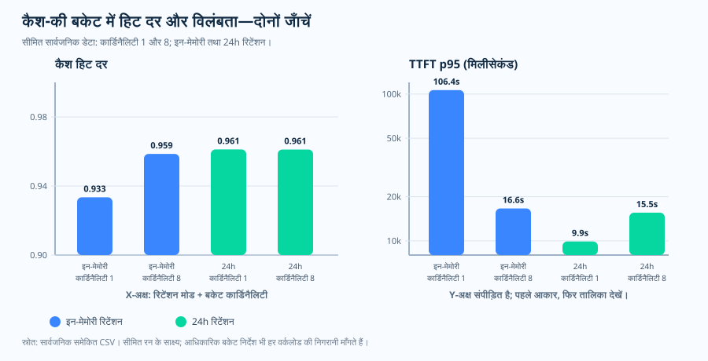
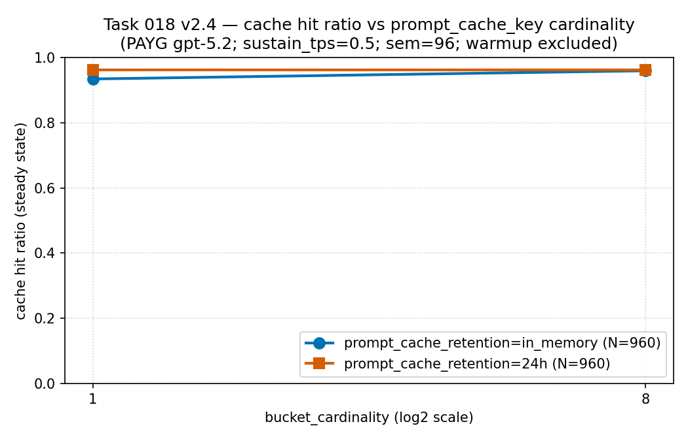
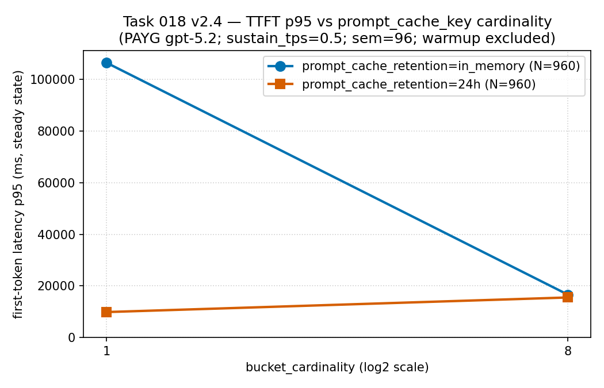

संचालन निबंध, prompt caching और routing hints
कैश कीज़ लेबल नहीं, रूटिंग के संकेत हैं
जब कोई टीम prompt_cache_key जोड़ती है, तो अक्सर उसे भी बाकी labels
की तरह ही इस्तेमाल करने लगती है। फिर सहज रूप से उसमें वही चीज़ें भर दी जाती हैं
जो हर call को अलग पहचान दें: request_id, user के सवाल का raw text,
timestamp, या tenant/user का इतना बारीक axis कि सब अलग-अलग रहें। लेकिन यह field
सिर्फ label नहीं है। यह prompt के prefix hash के साथ मिलकर repeated work को कहाँ
route किया जाए, उस पर असर डालती है। इसलिए key को बहुत specific बनाने की सहज
इच्छा सीधे इस लेख के मुख्य सवाल से टकराती है: क्या ऐसी unique key reuse इकट्ठा
करती है, या वही cache locality तोड़ देती है जिसे shared prefix बनाने की कोशिश
कर रहा था?
prompt_cache_key मिलकर repeated work को एक machine तक route करते
हैं। Microsoft Learn यह भी बताता है कि एक bucket में प्रति minute क़रीब 15
request के बाद cache effectiveness गिर सकती है। यह one-pager एक ही संदेश देता
है: हर bucket का size documented ceiling के नीचे रखें। साथ ही यह सीमा भी साफ़
करता है: ceiling आधिकारिक spec है, जबकि उसके साथ दिखा hit ratio और latency का
pattern PAYG पर मापा गया sanitized public aggregate है, जिसे यहाँ सिर्फ
descriptive रूप में दिखाया गया है।
cache-key बकेटिंग का एक-पृष्ठ सार SVG खोलें।

अंदाज़े से नहीं, key का size तय क्यों करें
unique key बनाने की सहज प्रवृत्ति यह मानकर चलती है कि specificity मुफ़्त है: key जितनी बारीक होगी, बस requests को उतना बेहतर अलग कर देगी। इसे मान लेने से
पहले दो बातों को साथ देखना चाहिए। पहली, Microsoft Learn क्या कहता है: prompt
cache के लिए शुरुआती prefix का identical होना ज़रूरी है, और
prompt_cache_key prefix hash के साथ मिलकर repeated work कहाँ route
होगा, उस पर असर डालती है। वही documentation एक roughly guide point भी देती है: एक prefix+key combination पर प्रति minute क़रीब 15 request: जिसके बाद traffic
extra machines तक फैल सकता है और cache effectiveness गिर सकती है। दूसरी बात,
इस repository के source runs का sparse sanitized public aggregate है, जो सिर्फ
descriptive रूप में दिखाता है कि वही prefix ज़्यादा buckets में बाँटने पर cache
hit ratio और first-token latency वास्तव में कैसे बदले।
असल में रुककर देखने लायक़ बात यही तुलना है। सिर्फ hit ratio देखने पर सब ठीक लग सकता है, जबकि नीचे का user experience बदल रहा हो। मापे गए इस हिस्से में bucket cardinality बढ़ने पर भी hit ratio ऊँचा और लगभग flat रहा (क़रीब 0.93–0.96), इसलिए अगर उसे अकेले पढ़ें तो लगेगा कि splitting की कोई क़ीमत नहीं पड़ी। लेकिन first-token latency tail दूसरी आधी कहानी दिखाती है: एक hot bucket बहुत बड़ा p95 उठा रही थी, और traffic को ज़्यादा buckets में फैलाते ही वह तेज़ी से गिर गया। इसलिए संचालन का असली सवाल यह नहीं है कि "cache hit हुआ या नहीं", बल्कि यह है कि "क्या हर bucket का size ऐसा है कि shared prefix अपनी locality बनाए रखे और कोई एक bucket ज़्यादा hot न हो जाए?" prefix hash routing और प्रति minute क़रीब 15 request वाला overflow point Microsoft Learn की documented बात है। bucket count की गणना और latency के साथ रखी public hit-ratio evidence इस repository की operational inference और source-run evidence है, कोई universal cache-hit curve नहीं। नीचे के charts इस संबंध को साफ़ दिखाते हैं।
प्रश्न
shared prompt prefix के लिए कितनी cache-key buckets रखनी चाहिए?
evidence
Microsoft Learn routing hint और approximate overflow point बताता है; यह repository sparse public measurement जोड़ती है।
फैसला
bucket को workload के हिसाब से बाँटें, per-bucket rate को risk zone के नीचे रखें, और hit ratio के साथ first-token latency भी देखें।
official behavior, key क्या बदलती है
cache की शुरुआत identical prefix से होती है
Microsoft Learn के मुताबिक prompt cache के लिए कम-से-कम 1,024 input tokens चाहिए, और पहले 1,024 tokens identical होने चाहिए। शुरुआती prefix को routing के लिए hash किया जाता है, और पहले 1,024 tokens के बाद हर 128 tokens पर additional cache match बनता है। पहले 1,024 tokens के भीतर एक character का फ़र्क़ भी cache hit को miss में बदल सकता है।
prefix पहले
repeated instructions, schema, tools, और examples को शुरू में रखें। prefix बदलते ही बाद का reuse बहुत कम काम आता है।
key बाद में
prompt_cache_key prefix hash के साथ मिलकर repeated work की routing पर असर डालती है।
गारंटी नहीं
यह key reuse की संभावना बढ़ाती है, hit का वादा नहीं करती। इसे operating hint की तरह देखें।
sizing, buckets को risk zone से नीचे रखें
एक bucket बहुत hot हो सकती है; बहुत ज़्यादा buckets बहुत cold पड़ सकती हैं
Microsoft Learn एक approximate overflow point बताता है। अगर वही prefix और
prompt_cache_key combination प्रति minute क़रीब 15 request से ऊपर
चला जाए, तो कुछ requests extra machines पर route हो सकती हैं और cache
effectiveness घट सकती है। व्यावहारिक sizing rule यह है कि shared prefix को
enough stable buckets में बाँटें, ताकि हर bucket थोड़ी headroom के साथ उस risk
zone से नीचे रहे।
bucket-count rule
common_prefix_rpm = common_prefix_tps × 60
minimum_buckets = ceil(common_prefix_rpm / 15)
recommended_buckets = ceil(common_prefix_rpm / target_rpm_per_bucket)
worked example
1.4 TPS पर shared prefix 84 RPM देखता है। 15-RPM floor पर 6 buckets बनती हैं; 10-RPM target पर 9.
सिर्फ एक क्यों नहीं?
एक single hot bucket local cache path को overflow करा सकती है, भले ही visible prompt स्थिर दिखे।
हर call पर unique क्यों नहीं?
अगर हर call की key unique होगी, तो reuse जमा ही नहीं होगा। cache के पास भीड़ बनने का मौका नहीं मिलेगा।
observed evidence, sparse public case
hit ratio और latency को साथ मापें

in_memory और
24h, हर एक N = 960 records। यह two-series line chart है,
frequency histogram नहीं। इसे कैसे पढ़ें: इस low per-bucket-rate
case में cardinality बढ़ने पर भी hit ratio ऊँचा और लगभग flat रहा (क़रीब
0.93–0.96)। यानी यहाँ prefix को ज़्यादा buckets में बाँटने से अपने-आप hit ratio
नहीं टूटा: fragmentation की क़ीमत इस panel में नहीं, अगले panel की latency
tail में दिखी। evidence boundary: PAYG gpt-5.2 पर एक tenant
और region से लिया गया sparse sanitized public aggregate (PTU नहीं)। यह
descriptive है, universal cache-hit curve नहीं। Source: values
इस repository के
results/cache-key-bucketing/cache_hit_ratio_vs_cardinality.csv
से आते हैं (स्रोत CSV)।

in_memory bucket बहुत बड़ा p95 (क़रीब 106,000 ms) उठा रही
थी, और traffic को 8 buckets में फैलाते ही यह तेज़ी से गिर गया (क़रीब
16,600 ms)। वहीं 24h series पूरे समय नीचे रही: इसलिए मापे
गए इस हिस्से में bucketing की क़ीमत latency tail पर दिखी। इसी कारण hit ratio
को first-token latency के साथ पढ़ना चाहिए, अकेले नहीं। evidence
boundary: PAYG gpt-5.2 पर लिया गया वही sparse sanitized public
aggregate (PTU नहीं)। यह descriptive है, latency guarantee नहीं।
Source:
results/cache-key-bucketing/ttft_p95_vs_cardinality.csv
(स्रोत CSV)।

| Retention | Cardinality | Hit ratio | TTFT p95 | Per-bucket RPM |
|---|---|---|---|---|
| in-memory | 1 | 0.9334 | 106,389.96 ms | 30.65 |
| in-memory | 8 | 0.9586 | 16,623.66 ms | 4.00 |
| 24h | 1 | 0.9612 | 9,899.74 ms | 30.73 |
| 24h | 8 | 0.9612 | 15,549.08 ms | 4.00 |
यह क्या साबित करता है, और क्या नहीं
यह public case कोई universal threshold curve साबित नहीं करता। लेकिन यह साफ़ दिखाता है कि operators को सिर्फ hit ratio नहीं देखना चाहिए। retention mode, per-bucket rate, और first-token latency: तीनों user experience को बदलते हैं।
key design, stable workload buckets
bucket को call से नहीं, workload से बाँटें
अच्छी key एक ही workload के लिए deterministic होनी चाहिए। बुरी key हर call की entropy अपने साथ ले आती है। अगर key में timestamp, UUID, random suffix, या unique call token आ गया, तो cache-key space फैल जाता है और prefix reuse बन ही नहीं पाता।
अच्छा
tenant:flow:locale:schema एक ही agent, schema, locale, और task shape को साथ रखता है।
बुरा
unique ids, timestamps, random UUIDs, और raw user questions हर call के लिए अलग bucket बना देते हैं।
निगरानी
per-bucket RPM, cached-token share, और first-token latency track करें। traffic shape बदलने पर size फिर से तय करें।
sources और evidence boundary
Tier 1: service contract (Microsoft Learn). prompt caching
का prefix rule, prefix hash routing, per-128-token match step, single-character
miss, prompt_cache_key routing hint, और प्रति minute क़रीब 15
request वाला overflow point यहीं documented है.
- [1] Azure OpenAI के साथ prompt caching: 1,024 टोकन की
न्यूनतम शर्त और identical prefix requirement, शुरुआती prefix के hash से
routing, पहले 1,024 tokens के बाद हर identical 128 tokens पर cache match,
single-character cache miss, prefix hash के साथ मिलकर routing पर असर डालने
वाला
prompt_cache_keyhint, और वह प्रति minute क़रीब 15 request point जहाँ same prefix+key वाले requests extra machines तक spill होकर cache effectiveness घटा सकते हैं: यह सब यहीं documented है। source: Microsoft Learn दस्तावेज़ (2026-06-04 को access किया गया), archive।
Tier 2: operational inference (यह repository). bucket-count math और public hit-ratio evidence Learn specifications नहीं हैं; ये इस repository की operational inference और source-run evidence हैं.
- [2] यह रिपॉज़िटरी,
docs/12-prompt-cache-key-policy.md: bucket-sizing runbook। repository documented क़रीब 15-RPM figure सेminimum_buckets = ceil(common_prefix_rpm / 15)निकालती है, जबकिrecommended_bucketsformula और default per-bucket 10-RPM target Learn specification नहीं, repository की operational inference है। स्रोत। - [3] यह रिपॉज़िटरी,
results/cache-key-bucketing/cache_hit_ratio_vs_cardinality.csv: hit ratio और first-token latency table के पीछे का sparse public aggregate। यह universal curve नहीं, source-run evidence है। स्रोत।
यह विषय क्या साबित करता है, और क्या नहीं। access date पर
Microsoft Learn prompt caching contract को जैसा बताता है: 1,024-token prefix
rule, prefix hash routing, prompt_cache_key hint, और प्रति minute
क़रीब 15 request overflow point: यह लेख उसे दर्ज करता है। साथ ही repository
का यह sizing rule of thumb भी रखता है कि shared prefix को इतनी stable buckets
में बाँटें कि हर bucket उस point से कुछ नीचे रहे। bucket-count formula और public
hit-ratio evidence operational inference और source-run evidence हैं, guaranteed
cache-hit curve नहीं। यह किसी universal threshold को साबित नहीं करता जो हर
model, region, और traffic shape पर एक जैसा लागू हो।
व्यावहारिक नियम
व्यावहारिक नियम: cacheable prefix को stable रखें, bucket को workload
के हिसाब से बाँटें ताकि हर prefix + prompt_cache_key documented
प्रति minute क़रीब 15 request overflow point से headroom के साथ नीचे रहे, और
cache hit ratio को first-token latency के साथ पढ़ें, अकेले किसी एक पर भरोसा
न करें।
अगला निबंध इस सवाल से आगे बढ़ता है कि key को कैसे बाँटना है, और पूछता है कि cache कितनी देर तक बनी रहनी चाहिए।